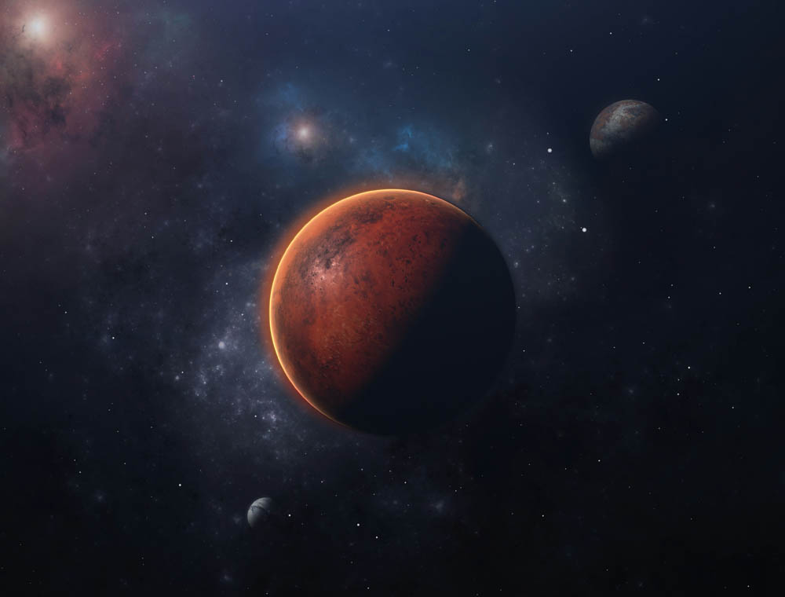
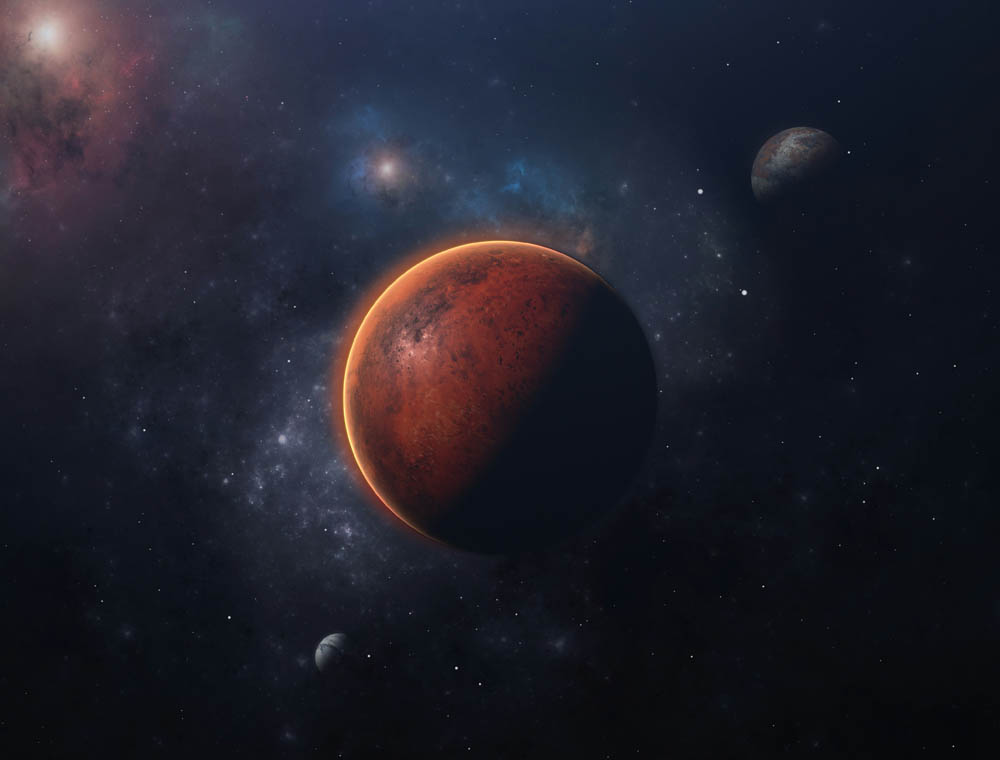

Soul Love
David Bowie
Stone love, she kneels before the grave
A brave son, who gave his life to save the slogan
That hovers between the headstone and her eyes
For they penetrate her grieving
New love, a boy and girl they talking
New words that only they can share in
New words, a love so strong it tears their hearts
To sleep through the fleeting hours of morning
Love is careless in its choosing
Sweeping over across a baby
Love descends on those defenseless
Idiot love will spark the fusion
Inspirations have I none
Just to touch the flaming dove
All I have is my love of love
And love is not loving
Soul love, the priest that tastes the word and
Told of love, and how my God on high is
All love, though reaching up my loneliness evolves
By the blindness that surrounds him
Rock 'n' Roll Suicide
David Bowie
Time takes a cigarette, puts it in your mouth
You pull on your finger
Then another finger, then cigarette
The wall-to-wall is calling
It lingers, then you forget
Oh, oh, oh, you're a rock 'n' roll suicide
You're too old to lose it, too young to choose it
And the clock waits so patiently on your song
You walk past the café, but you don't eat
When you've lived too long
Oh, no, no, no, you're a rock 'n' roll suicide
Oh no, love, you're not alone
You're watching yourself, but you're too unfair
You got your head all tangled up
But if I could only make you care
Oh no, love, you're not alone
No matter what or who you've been
No matter when or where you've seen
All the knives seem to lacerate your brain
I've had my share, I'll help you with the pain
You're not alone
Moonage Daydream
David Bowie
I'm an alligator, I'm a mama-papa comin' for you
I'm the space invader
I'll be a rock 'n' rollin' bitch for you
Keep your mouth shut
You're squawking like a pink monkey bird
And I'm bustin' up my brains for the words
Keep your 'lectric eye on me, babe
Put your ray gun to my head
Press your space face close to mine, love
Freak out in a moonage daydream, oh yeah!
Don't fake it baby
Lay the real thing on me
The church of man, love
Is such a holy place to be
Make me baby, make me know you really care
Make me jump into the air
Keep your 'lectric eye on me, babe
Put your ray gun to my head
Press your space face close to mine, love
Freak out in a moonage daydream, oh yeah!
 
